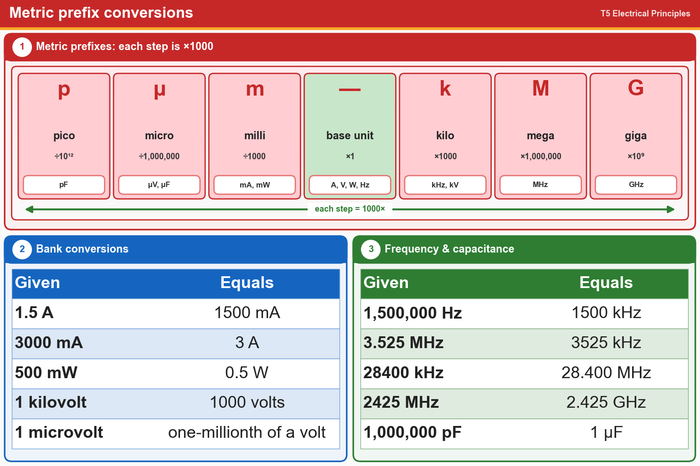

💡 kilo = 1000, mega = 1,000,000, milli = 1/1000, micro = 1/1,000,000. Each step is ×1000.
Pick an answer for each question, then press Grade at the bottom.
T5B01
How many milliamperes is 1.5 amperes?
✘A.0.0000015 milliamperes
✔B.1500 milliamperes
✘C.0.0015 milliamperes
✘D.1,500,000 milliamperes
T5B06
Which is equal to 3000 milliamperes?
✘A.3,000,000 amperes
✘B.0.3 amperes
✔C.3 amperes
✘D.0.003 amperes
T5B05
Which is equal to 500 milliwatts?
✘A.500,000,000 watts
✘B.5 watts
✔C.0.5 watts
✘D.500,000 watts
T5B03
Which is equal to one kilovolt?
✔A.One thousand volts
✘B.One hundred volts
✘C.One one-thousandth of a volt
✘D.One million volts
T5B04
Which is equal to one microvolt?
✔A.One one-millionth of a volt
✘B.One one-thousandth of a volt
✘C.One thousand kilovolts
✘D.One million volts
T5B02
Which is equal to 1,500,000 hertz?
✘A.1500 MHz
✘B.15 GHz
✔C.1500 kHz
✘D.150 kHz
T5B07
Which is equal to 3.525 MHz?
✘A.35.25 kHz
✘B.3,525,000 kHz
✔C.3525 kHz
✘D.0.003525 kHz
T5B12
Which is equal to 28400 kHz?
✘A.2.800 MHz
✘B.284.00 MHz
✔C.28.400 MHz
✘D.28.400 kHz
T5B13
Which is equal to 2425 MHz?
✘A.24.25 GHz
✘B.0.002425 GHz
✘C.242.5 GHz
✔D.2.425 GHz
T5B08
Which is equal to 1,000,000 picofarads?
✘A.0.001 microfarads
✘B.1000 microfarads
✘C.1,000,000,000 microfarads
✔D.1 microfarad